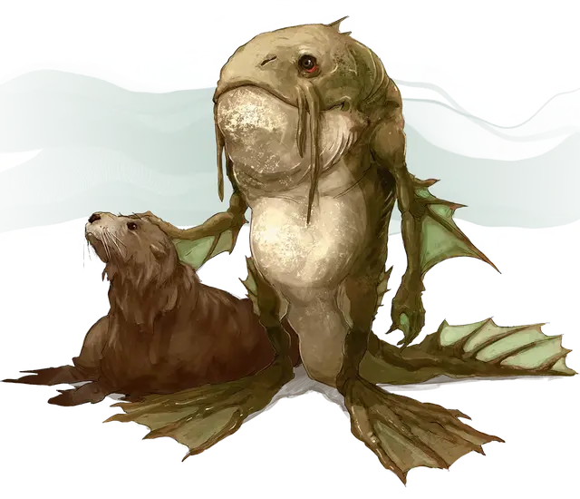

Локата
Locathah
Средний Гуманоид (Локата), нейтральный

Класс Доспеха 13 (природный доспех)
Хиты 22 (4к8 + 4)
Скорость 30 футов, плавая 30 футов
| мод | спас | ||
|---|---|---|---|
| СИЛ | 13 | +1 | +1 |
| ЛОВ | 12 | +1 | +3 |
| ТЕЛ | 12 | +1 | +1 |
| мод | спас | ||
|---|---|---|---|
| ИНТ | 11 | +0 | +0 |
| МДР | 10 | +0 | +0 |
| ХАР | 11 | +0 | +0 |
Навыки Атлетика +3, Восприятие +2
Чувства пассивное Восприятие 12
Языки Общий, Акван
Опасность 1/2 (100 опыта)
Бонус мастерства +2
Особенности
Ограниченная амфибийность. Локата может дышать и воздухом и под водой, но чтобы не задохнуться, ему нужно погружаться в воду хотя бы раз каждые 4 часа.
Воля левиафана. Локата с преимуществом совершает спасброски против того, чтобы стать испуганным, отравленным, очарованным, ошеломлённым, парализованным или усыпленным.
Действия
Мультиатака. Локата совершает две рукопашные атаки Копьём.
Копьё. . Рукопашная или дальнобойная атака оружием: +3 к попаданию, досягаемость 5 футов или дистанция 20/60 футов, одна цель. Попадание: 4 (1к6 + 1) колющего урона или 5 (1к8 + 1) колющего урона, если используется двумя руками.
Описание
Эти жизнерадостные и гордые рыболюди (описанные в "Опасность в Дануотере") пережили войну, рабство и жестокое обращение со стороны других водных существ. Они живут в затопленных племенных общинах вдоль морских побережий и охотятся как над водой, так и под водой.